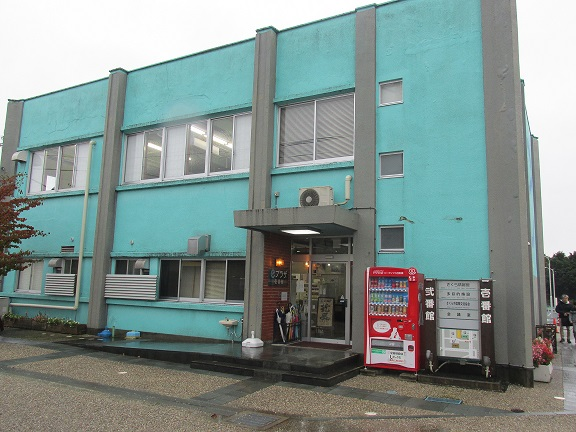
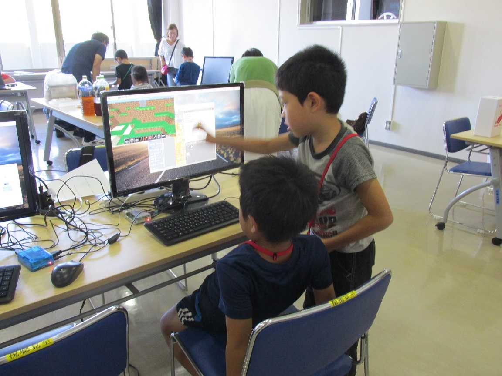
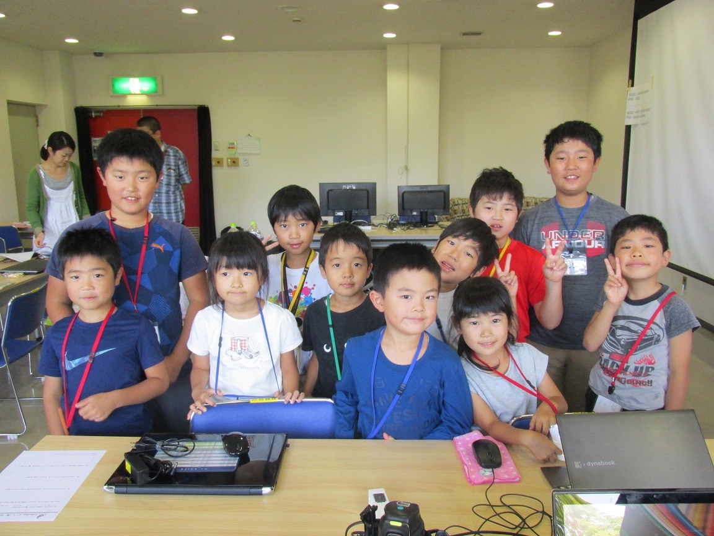

子どものためのプログラミング道場
栃木県 さくら市
栃木県 さくら市
第４回のCoderDojoさくら開催です！ 今回の会場は氏家駅前にあるさくら市e壱番館です。

台風２２号の影響で開催が危ぶまれましたが、新しいニンジャを含む１２名が参加してくれました！どうもありがとうございます！

今回ははじめてプログラムを作るニンジャを対象に、メンターのまきおねえさんがScratchで簡単なゲームの作り方を説明しながら作成しました。
はじめは戸惑い気味でしたが、慣れてくるとどんどんクリアして、くり返しや条件判定の練習もできました。

はじめてプログラミングに取り組んでいるニンジャのわからないところを、かわいい先輩？ニンジャが教えてくれました。教わったニンジャ君も感心していましたよ！

恒例の発表タイムです。この時間を楽しみにしているニンジャも多いようです。パソコンを囲んでみんな楽しそうです。


今回も楽しい雰囲気の中、ニンジャ達みんなよくがんばりました。次回は12月3日(日)を予定しています。ぜひ来てくださいね！

第４回のダイジェスト動画を作成しました。こちらもぜひご覧ください。